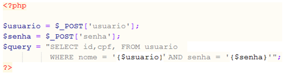
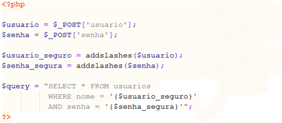
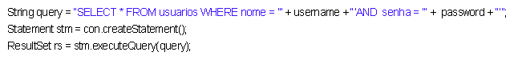
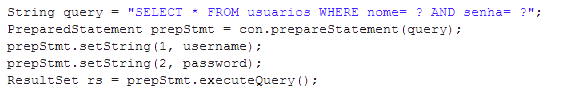

Protegendo-se(){
Dicas
Protegendo-se
Depois de tanta explicação de como ocorre um ataque por SQL Injection, vamos tratar logo de proteger contra isso. Consideremos um formulário para login de usuários. Sem nenhuma verificação, o invasor pode logar como qualquer usuário, se ele souber o nome do usuário, usando:
usuario: admin'--
Ou o atacante pode logar como o primeiro usuário da tabela 'usuarios', com a inserção abaixo:
usuario: ' or 1=1--
A expressão "or 1=1" sempre retornará true, independente se o usuário e a senha estão corretos ou não. Alguns métodos de proteção são o tratamento de strings ou o uso de Prepared Statements. Vejamos um exemplo de tratamento de strings em PHP e um exemplo de Prepared Statements em Java. Lembrando que ambas as técnicas podem ser utilizadas tanto em Java quanto em PHP.
Tratamento de Strings
Consideremos o seguinte script em PHP:

Todos os valores coletados devem ser validados e tratados para impedir a execução de outras instruções que não aquelas previstas. Um tratamento básico para a execução de desse tipo de query pode ser tratando as aspas adicionais que podem surgir:

A função addslashes(), do próprio PHP, adiciona uma barra invertida antes de cada aspa simples e aspa dupla encontrada. Mas, existe também a diretiva de configuração do PHP magic_quotes_gpc. Se ela estiver ativada, o escape é realizado automaticamente sobre os dados. A função get_magic_quotes_gpc(), disponível nas versões do PHP a partir da 3.0.6, retorna a configuração atual da diretiva magic_quotes_gpc. Abaixo, a query string resultante do tratamento:
SELECT id, cpf FROM usuario WHERE nome =' \' or 1=1--' AND senha = 'meusegredo' ;
Prepared Statements
Seja o seguinte código java:

A concatenação da string query com os valores das variáveis usuario e senha, combinado com o uso da classe Statement deixa espaço para a invasão. Para resolver esse tipo de coisa você pode usar PreparedStatement ao invés de Statement. Prepared Statements são comandos pré processados, permitindo a construção de pré queries SQL que podem ser reutilizadas para efetuar queries iguais com diferentes valores de parâmetros.
O que fazemos é criar a query, deixando os valores das variáveis indefinidos. Então especificamos esses valores antes de executar a query. Isso permite que a mesma query padrão possa ser executada várias vezes, variando apenas os parâmetros.
Na hora de construir a query, substitua os valores das variáveis com o simbolo de interrogação. O objeto PreparedStatement suporta vários métodos, cada um com o fim de definir um valor de um tipo específico (int, long, String, etc). Cada método recebe dois argumentos, um índice indicando qual o parâmetro que queremos acessar e o valor a ser inserido. O primeiro parâmetro tem o índice 1 (e não 0). Assim, temos:

Uma vez criados os Prepared statements, você pode reutilizá-los a vontade. Além de segurança, você leva de brinde desempenho, já que o banco de dados precisará compilar as instruções apenas uma vez.
}